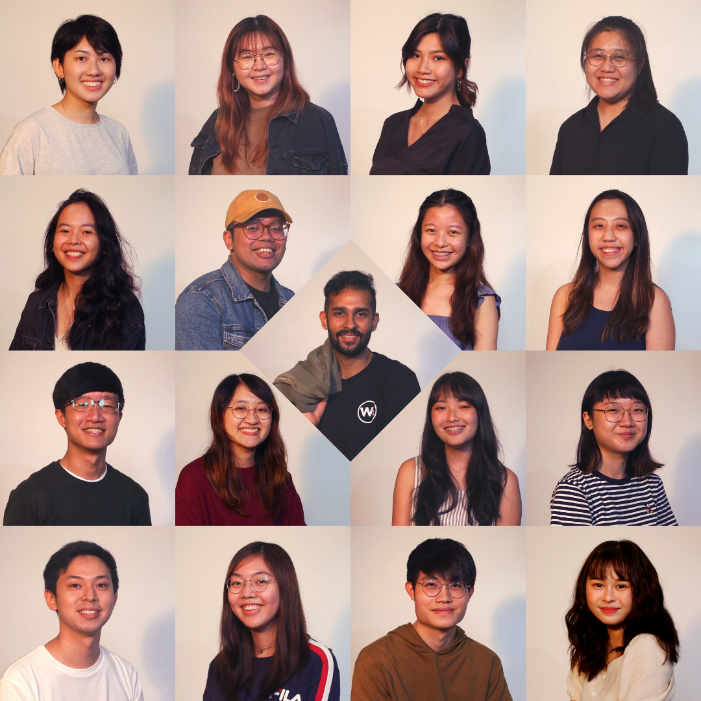
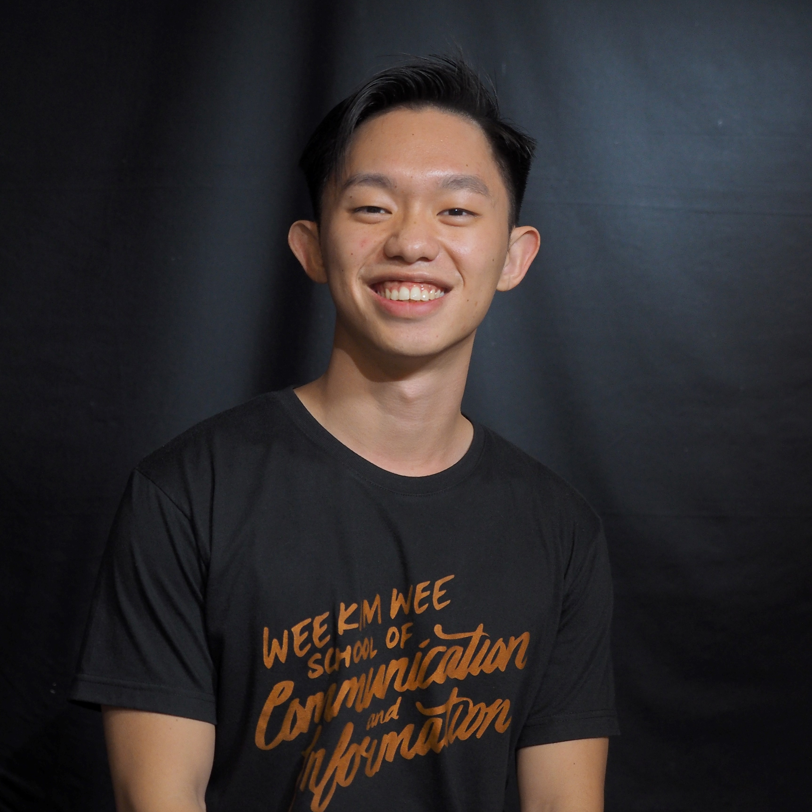
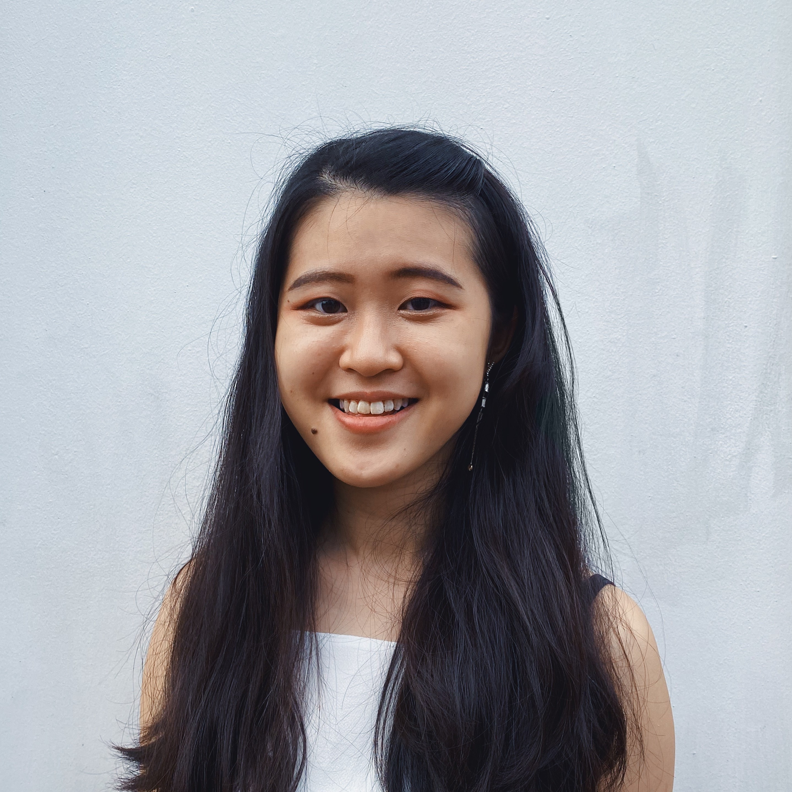
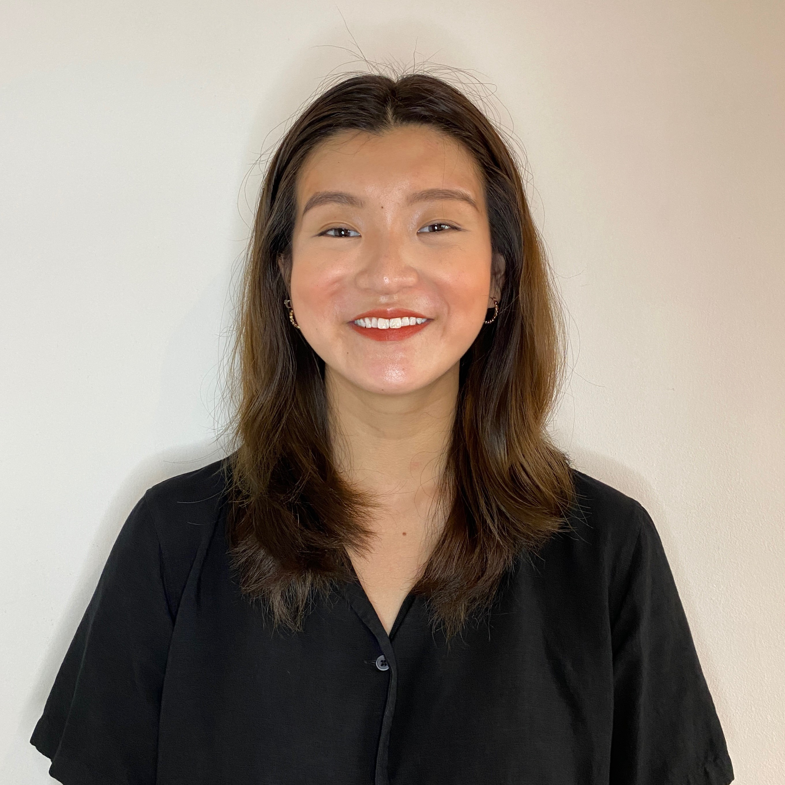

The WKWSCI Special Recognition Awards acknowledges students who have contributed extensively to the well-being of the student body and/or embody the true spirit of a WKWSCI student.
*Awarded by vote
Award Recipients

WeeVolunteer AY20/21
Service Award Recipient
Wee Khee Xin Charmaine
Spirit Award Recipient
Award Nominees
Service Award Nominees

Justin Teo ZhongHeng

Denise Khng Yu Qing
Spirit Award Nominees
Athena Tan Jiaxin

Rachael Lim Yan Yi
Wee Xuan Yi
Justin Teo ZhongHeng
CS'21 Service Award Nominee
You’ll probably hear Justin before you see Justin... Likely singing at a school event, laughing loudly at the benches, or doing something silly for Theme Week. He’s a familiar face at school events and walks with a spring in his step. To have balanced club work, school work, family and relationships all at once was no easy feat, but Justin served tirelessly and wholeheartedly during his term as 28th CI Club President to contribute to this warm school culture that we cherish dearly. Anyone who has worked with him would agree that he carried thoughtfulness and joy in each event that the club embarked on. Besides the many student life activities that he helped to drive the club to accomplish, he also made great effort to know each member of the team and constantly thought of ways to improve the team’s bond. His optimism is so contagious and everyone who’s interacted with Justin can attest to how he has brought some sunshine to WKWSCI this past year.
Currently in her fourth year at WKWSCI, Denise is capable of wearing many hats and has been recognised for her versatility and contributions within different WKWSCI committees. Denise had been involved in WKWSCI's annual theatre production, Paparazzi for two consecutive years. In her second year, Denise also served as a Business Manager for the WKWSCI Volunteer Programme (WeeVo) in its inaugural year and set important groundwork and foundation for the new committee. With her experiences in different roles and programmes, Denise was able to provide innovative business ideas to raise funds for WeeVo's causes. She expanded her responsibilities and took up a bigger role as WeeVo's Financial Controller in her third year and continued to guide new members through their volunteering journey. Denise's desire to serve is evident through her contribution to the various WeeVo's initiatives (WeeReach volunteer for Movement for the Intellectually Disabled of Singapore and Jamiyaah Home of the Aged) that target different groups of our local community. She also served as the campaign editor for Causes for Animal (CAS) in her final year.
In spite of the COVID-19 pandemic, WeeVolunteer (WeeVo) was able to adapt and provide WKWSCI students and staff with opportunities to give back to the community locally and abroad.
Locally, instead of physical volunteering, WeeVo conducted Zoom sessions for volunteers to interact with our beneficiaries at MINDS@Napiri every weekend, and also initiated letter writing sessions, pre-recorded volunteer sessions, and other remote opportunities for the elderly residents and our partnering organisations.
Internationally, WeeVo conducted workshops for struggling businesses and students in Laos to upgrade their digital marketing skills, to help them cope amidst the COVID-19 crisis. On top of that, they conducted a social campaign in partnership with DoTheKindness, to aid the girls under the care of the business owner.
In between these programmes, WeeVo conducted a fundraiser for the Beirut crisis, along with donation drives and canvassing efforts in order to better provide assistance to their beneficiaries. A new volunteer wing was also founded, and was launched by introducing Cleaner's Appreciation Day in WKWSCI, as well as a Beach Cleanup event to remind people to be more environmentally conscious.
In spite of the circumstances through the year, WeeVo made itself adaptable to the situation and was still able to give back to the various communities in Singapore, as well as those abroad. Their dedication to serving the various communities in need of aid through the ups and downs of the COVID-19 crisis exemplifies why they are deserving of this nomination.
Athena is someone who goes above and beyond for the school, not just for her friends but for to ensure the success of school events. And that is because Athena embodies the qualities and characteristics of a true-blue WeeKid. Despite being in the 28th CI Club and having many commitments, Athena never fails to participate in school events such as theme week, and would even come earlier to prepare for the events while being all decked out in Harajuku fashion. Besides being active in school activities, she is frequently at the benches and is a friend relied on for counsel and advice by many amongst and beyond her batch. She is friendly to friends and strangers alike, and truly takes the time to listen to everyone and help them improve their situations, be it in a personal capacity or through her role as a business manager in CI Club. Friendly, resourceful and reliable, Athena is an excellent companion and communicator and someone who truly embodies the WKWSCI spirit.
Rachael has been actively involved in school and is a familiar face at WKWSCI student events. During her time in Paparazzi Theatre Production and Freshmen Orientation Camp committees, Rachael has shown her dedication to delivering her best. Despite being in her final year, she continues to show her commitmment to the school as the Special Projects Officer of the 28th CI Club, taking care and guiding the adhoc committees in the right direction. She is most notable for her loud voice and positive presence, often going the extra mile for her friends, be it sharing useful resources with her peers or helping out with their school projects. Rachael is also a regular participant of WKWSCI theme week and has won once for dressing up as a frozen chicken for the Food Pyramid Thursday in 2017.
Besides actively engaging in school events, Charmaine has upheld the WKWSCI spirit through involvement and planning. After being part of Paparazzi Theatre Production, WeeJam and the 25th CI Club, her desire to create a vibrant school environment urged her to lead the 28th CI Club as the Vice President. As a compassionate, understanding and peaceable person, Charmaine is known to be a team player who wants the best for everyone. She goes above and beyond to help those around her through sharing the latest opportunities and addressing questions about school. Her approachable disposition has made WKWSCI feel welcoming to prospective students and peers alike.
Xuan Yi is the overly-friendly tall guy whom everyone affectionately calls An. He is a well-known Weekid whose friendly disposition makes people feel like they are at home when they are in WKWSCI. He makes it a point to check in on his peers whenever he sees them. He treats the school like his home, often playing guitar at the benches, taking part in activities run by the CI Club, and was part of various ad-hoc events such as being the director of PAPARAZZI 2018, Senior Attached in WKWFOP'18 as well as volunteering with WeeVo. He exemplifies the WKWSCI spirit - being part of the first batch of WKWSCI students to attend the SXSW Conference, winning the Graphite Pencil in D&AD 2020, as well as creating a series of graphics titled "famous last words" when McDonalds Singapore announced its closure during the Circuit Breaker last year, which went viral overnight.